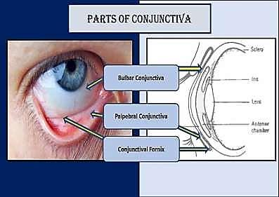

Conjunctiva · Normal anatomyNerve supply of the conjunctiva Bulbar Conjunctiva, Palpebral Conjunctiva and Fornix of Eye By supra-orbital, supratrochlear, infratrochlear, lacrimal and infraorbital nerves. The part of conjunctiva near the limbus is supplied by ciliary nerves.